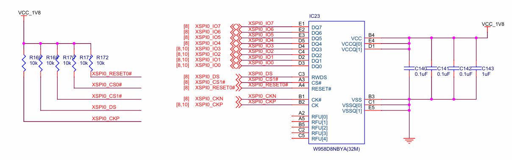
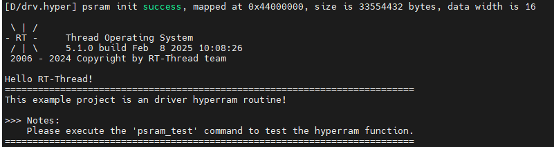

HyperRAM 驱动例程
中文 | English
简介
HyperRAM 是一种高性能、低延迟的外部存储器，主要用于嵌入式系统中，提供额外的存储容量和快速的数据访问。其主要功能和原理如下：
功能
高速数据存取：HyperRAM 提供较高的数据传输速率，适合需要快速读写操作的应用，如图像处理和实时数据处理。
低功耗：相较于其他类型的存储器，HyperRAM 设计上注重低功耗，适合电池供电的嵌入式设备。
扩展存储：HyperRAM 可以为微控制器或其他处理器提供额外的存储空间，解决内置RAM不足的问题。
简化设计：HyperRAM 通常使用简单的接口，简化了硬件设计和系统集成。
原理
串行接口：HyperRAM 通常采用 SPI 或类似的串行接口进行通信，这使得连接和数据传输变得高效。
动态随机存取存储器（DRAM）：HyperRAM 基于 DRAM 技术，使用电容器存储数据，具有较高的密度和存储能力。
内存控制器：通过内存控制器，微控制器能够管理与 HyperRAM 的数据传输，控制读写操作。
页面模式：HyperRAM 支持页面模式操作，这允许更高效的数据传输，减少访问延迟。
在嵌入式系统中，HyperRAM 的应用广泛，尤其是在对存储速度和能效有较高要求的场合。
本例程主要介绍了如何在EtherKit上使用 Hyperram 驱动进行读写测试。
硬件说明

软件说明
本例程的源码驱动位于 …/library/HAL_Drivers/drv_hyperram.c 中：
/*
* Copyright (c) 2006-2024, RT-Thread Development Team
*
* SPDX-License-Identifier: Apache-2.0
*
* Change Logs:
* Date Author Notes
* 2024-10-28 yuanjie first version
*/
#include <rtthread.h>
#include "hal_data.h"
#ifdef BSP_USING_HYPERRAM
#define DRV_DEBUG
#define LOG_TAG "drv.hyper"
#include <drv_log.h>
#define PSRAM_BANK_ADDR ((uint32_t)0x44000000UL) // XSPI0 CS1
#define PSRAM_SIZE ((uint32_t)0x2000000UL) // 32MBytes
#define PSRAM_DATA_WIDTH 16
#ifdef RT_USING_MEMHEAP_AS_HEAP
static struct rt_memheap system_heap;
#endif
static int HYPERRAM_Init(void)
{
int result = RT_EOK;
/* XSPI initial settings */
/* Initialize the PSRAM controller */
if (R_XSPI_HYPER_Open(&g_hyperbus0_ctrl, &g_hyperbus0_cfg) != FSP_SUCCESS)
{
LOG_E("HYPER RAM init failed!");
result = -RT_ERROR;
}
else
{
LOG_D("psram init success, mapped at 0x%X, size is %d bytes, data width is %d", PSRAM_BANK_ADDR, PSRAM_SIZE, PSRAM_DATA_WIDTH);
#ifdef RT_USING_MEMHEAP_AS_HEAP
/* If RT_USING_MEMHEAP_AS_HEAP is enabled, PSRAM is initialized to the heap */
rt_memheap_init(&system_heap, "psram", (void *)PSRAM_BANK_ADDR, PSRAM_SIZE);
#endif
}
return result;
}
INIT_BOARD_EXPORT(HYPERRAM_Init);
#ifdef DRV_DEBUG
#ifdef FINSH_USING_MSH
int psram_test(void)
{
int i = 0;
uint32_t start_time = 0, time_cast = 0;
#if PSRAM_DATA_WIDTH == 8
char data_width = 1;
uint8_t data = 0;
#elif PSRAM_DATA_WIDTH == 16
char data_width = 2;
uint16_t data = 0;
#else
char data_width = 4;
uint32_t data = 0;
#endif
/* write data */
LOG_D("Writing the %ld bytes data, waiting....", PSRAM_SIZE);
start_time = rt_tick_get();
for (i = 0; i < PSRAM_SIZE / data_width; i++)
{
#if PSRAM_DATA_WIDTH == 8
*(__IO uint8_t *)(PSRAM_BANK_ADDR + i * data_width) = (uint8_t)0x55;
#elif PSRAM_DATA_WIDTH == 16
*(__IO uint16_t *)(PSRAM_BANK_ADDR + i * data_width) = (uint16_t)0x5555;
#else
*(__IO uint32_t *)(PSRAM_BANK_ADDR + i * data_width) = (uint32_t)0x55555555;
#endif
}
time_cast = rt_tick_get() - start_time;
LOG_D("Write data success, total time: %d.%03dS.", time_cast / RT_TICK_PER_SECOND,
time_cast % RT_TICK_PER_SECOND / ((RT_TICK_PER_SECOND * 1 + 999) / 1000));
/* read data */
LOG_D("start Reading and verifying data, waiting....");
for (i = 0; i < PSRAM_SIZE / data_width; i++)
{
#if PSRAM_DATA_WIDTH == 8
data = *(__IO uint8_t *)(PSRAM_BANK_ADDR + i * data_width);
if (data != 0x55)
{
LOG_E("PSRAM test failed!");
break;
}
#elif PSRAM_DATA_WIDTH == 16
data = *(__IO uint16_t *)(PSRAM_BANK_ADDR + i * data_width);
if (data != 0x5555)
{
LOG_E("PSRAM test failed!");
break;
}
#else
data = *(__IO uint32_t *)(PSRAM_BANK_ADDR + i * data_width);
if (data != 0x55555555)
{
LOG_E("PSRAM test failed!");
break;
}
#endif
}
if (i >= PSRAM_SIZE / data_width)
{
LOG_D("PSRAM test success!");
}
return RT_EOK;
}
MSH_CMD_EXPORT(psram_test, XSPI XIP hyper ram test)
#endif /* FINSH_USING_MSH */
#endif /* DRV_DEBUG */
#endif /* BSP_USING_HYPERRAM */
编译&下载
RT-Thread Studio：在RT-Thread Studio 的包管理器中下载EtherKit 资源包，然后创建新工程，执行编译。
IAR：首先双击mklinks.bat，生成rt-thread 与libraries 文件夹链接；再使用Env 生成IAR 工程；最后双击project.eww打开IAR工程，执行编译。
编译完成后，将开发板的Jlink接口与PC 机连接，然后将固件下载至开发板。
运行效果
按下复位按键重启开发板，观察开发板终端日志。

执行 psram_test 指令开始 hyperram 读写测试：
msh >psram_test
[D/drv.hyper] Writing the 33554432 bytes data, waiting....
[D/drv.hyper] Write data success, total time: 0.866S.
[D/drv.hyper] start Reading and verifying data, waiting....
[D/drv.hyper] PSRAM test success!